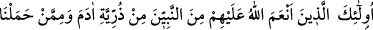
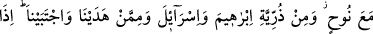
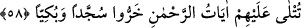

mekânların en yükseği, bütün feleklerin kutbu olan Güneş feleğidir. Çünkü feyiz, onun
rûhâniyyetinden diğer feleklere ulaşır. Aynı şekilde bütün felekler onun feleğinden
aydınlanır. Nitekim “Beden kalbin üzerinde devreder.” denilmiştir. Yani ondan bütün
bedene feyz ulaşır. Mi‘rac hadisinin de haber verdiği gibi güneş feleğinde İdris (a.s.)’ın
rûhâniyetinin makâmı vardır.
et-Te’vîlâtü’n-Necmiyye’de şöyle der: “Kâinatı Yaratanın katında, mükevvenâtın
üstündeki yüce mekân, “muktedir bir hükümdarın yanında sıdk makâmıdır.” (Bk. el-
Kamer, 54/55)
Allah Teâlâ, Muhammed (a.s.)’ın ümmetinden olanlara makâm yüksekliği vermiştir.
Fakat kul, mutlak olarak yüce olmayı düşünemez. Çünkü hangi mertebeye yükselirse
yükselsin varlık âleminde mutlaka ondan daha yükseği olur. Bu da peygamber ve
meleklerin mertebeleridir. Evet, insanlardan kimsenin ulaşamadığı bir mertebeye
ulaşmayı tasavvur edebilir. Bu da Peygamberimizin (a.s.) mertebesidir. Ancak bu da
mutlak yüceliğe göre eksiktir.
Mesnevî’de şöyle der:
El üstünde el var... Bu nereye kadar!
Ta son erişilecek menzile, Allâh’a kadar
O öyle bir denizdir ki, ne dibi var ne kıyısı
Bütün denizler onun yanında sadece sel kadar
Hileler ve çareler ejderha ise
“İllallah”ın önünde onlar “lâ” kadar
(Tek olan Allah yanında hepsi hiçtir)
Şu halde avâma gereken kadılık, müderrislik, imamlık, idarecilik, ve benzeri
riyâsetlerden kaynaklanan izâfî üstünlüğe iltifat etmemektir. Havâssa gereken ise fiil ve
sıfatlar gibi bazı makâmlardan meydana gelen îtibârî üstünlüğe bakmamaktır. Çünkü
hakîkî kemal, her fânî izâfetten ve gelip geçici alâkadan terakkî edip kurtulmak; her
hâdis varlığın elbisesinden sûreten ve mânen tecerrüd etmektir. Ashâb-ı Suffa’nın hâlini
hiç görmez misin?! Allah Teâlâ’dan bizi başkalarıyla övünenlerden kılmamasını niyaz
ederiz!
58. İşte bunlar; Allâh’ın nimet verdiği peygamberlerden, Âdem neslinden, Nûh ile
beraber gemide taşıdıklarımızın neslinden, İbrâhim ve İsrâil (Yakûp) neslinden, yol